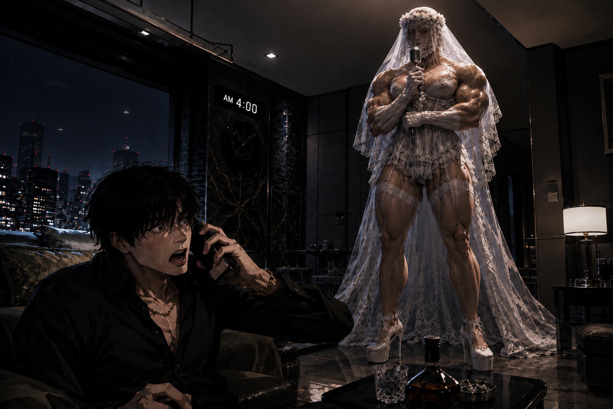
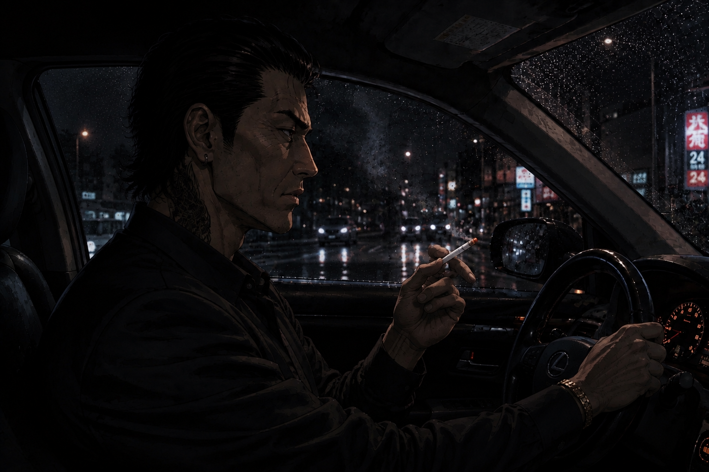

午前4時の花嫁 · 새벽 4시의 신부 · THE BRIDE AT 4 A.M.
※サービスとして、Wands King Brideにまつわる都市伝説をひとつお届けします。本作は実在の人物・氏名・店舗・事件とは関係のない、再解釈された都市怪談です。人物名はイニシャルで表記します。
01 · 雨の午前4時
雨の降る夜。東京の、とある高級マンション。アイドルか若手俳優のように整った顔の男Sが、酒の匂いをまとって帰宅した。歌舞伎町で彼を知る者なら、もっと簡単にこう説明する。
悪党。
Sは店のAce級マダムホストだった。女たちを天秤にかけ、愛情を餌に酒を売り、借金まで背負わせる。逆らう者には裏社会につながる兄貴分まで出てくる。その夜、午前4時ごろ携帯が鳴った。A。長年ホストに金を注ぎ込み、家族とも疎遠になっていた女だった。
S：「あぁ？ 誰だよ、この時間に……A？ 電話してくんなって言っただろ。で、金はいつ返すんだよ？」
A：「……S君……」
彼女が続きを言う前に、電話の向こうから男の無伴奏のR&Bボーカルが聞こえた。妙に甘く、滑らかだった。
S：「は？ お前、誰といるんだよ！ 俺以外の男に会うなって言っただろ！」
A：「違う！ 来て……怖い……S君。この人が先に私の部屋にいたの……！」
Sは一瞬でジャケットを着直した。質の悪い後輩たちを集め、バール、金属バット、包丁まで持たせてAの部屋へ向かった。どう考えても怪談の被害者側の装備ではない。
扉を蹴り開ける。泣いているA。だが誰もいない。開いた窓。雨風。そして窓辺には白いウェディングドレスと長いベールだけが揺れていた。
S：「男だって言ったよな？ なんでウェディングドレスなんだよ。」
A：「男なの……ランジェリーみたいなウェディングドレスで……白いハイヒールを履いて……すごく背が高くて、筋肉だらけで……ヴィンテージのマイクを持ってた……！」
Aはそこで泣き崩れた。後輩たちは顔を見合わせる。「危ない変態じゃないすか」「最近の変態も筋トレするんすね」「どんな奴か会ってみたいけどな」。だがSだけは笑えなかった。
電話越しに聞いた一節が、頭から離れなかった。
🎙️ “I'm Not The Kind……”
02 · もう、いた
数日後。Sはいつものように女を泣かせ、酒を売り、金を稼ぎ、高級マンションへ戻った。ジャケットをソファへ投げ、短い動画を見ながら笑った。
AM 4:00
ふと顔を上げた。
男は、もう部屋の中にいた。

CASE IMAGE 01 · meet_wkb_room_00
腕を組んだ巨大な男が、ただSを見ていた。白いハイヒール。ランジェリーのようなウェディングドレス。長いベール。そして異様な筋肉。
👰♂️ ……
S ……
👰♂️ ……
Sの視線が男の手へ落ちる。ヴィンテージマイク。酒が一瞬で抜けた。
花嫁は、ゆっくりマイクを口元へ運んだ。
🎙️ “I'm Not The Kind……”
Sは震える手で電話をかけた。
S：「あ、兄貴！！ 助けてください！！！」
D：「おい。なんだ。」
白い巨体はSなど気にせず、甘く続きを歌った。
👰♂️🎙️ “Who says YES!~ 🎶”
電話の向こうが沈黙した。
D：「…………お前、ハズレを引いたな。」
S：「え？？？」
D：「そいつは都市怪談だ。東京じゃもう有名だ。俺の弟分も、そいつに会って終わった。」
S：「何言ってるんですか！ 兄貴、助けてください！ お願いします！」
D：「落ち着いてよく聞け。そいつはな……食い物を欲しがる。」
S：「…………はい？」
D：「冷蔵庫を開けろ、この馬鹿。」
03 · ヤクザDの回想録

CASE IMAGE 02 · Yakuza_remember_00
雨の東京を黒い車が走る。Dは左手でハンドルを握り、右手の煙草から長く煙を吐きながら昔を思い出した。
「うちにはな、どうしようもない末っ子が一人いた。就職もしない。恋愛もしない。部屋に引きこもって何ひとつやろうとしない。俺みたいに悪鬼にでもなって何かやろうって気すらねえ。家族もあいつを、いないものとして扱っていた。」
そんな弟から、ある夜、久しぶりに電話が来た。なぜか最後の電話になるような気がした。
「……まあ、Wands King Bride。もしかしたら立派な花嫁なのかもしれねえな。あいつは性別も年齢も職業も顔も選ばない。恋愛も結婚も見込みがないと思ってた弟には……案外、いい結婚だったのかもしれない。」
そして何の取り柄もなかった弟は部屋を出た。働き、人に会い、事業を始め、いつしかスタートアップ界の新星になった。
「花嫁の特別な内助の功でも受けてんのかね……。」
もちろんDは、弟がなぜ必死で稼ぎ続けるのか、なぜ冷蔵庫が空になることを異常に恐れるのか、その本当の理由までは知らなかった。
Dは煙草の煙を長く吐いた。
「だがな。うちの一家だけじゃない。○○組でも死んだ奴は山ほどいる。俺にかかってきた電話だけでも三本。目撃談なら数え切れねえ。どんな大男が来ても、どんな悪鬼みたいな奴が来ても……あいつには勝てない。それだけは保証する。」
04 · Sの人生相談
S：「兄貴！！！ じゃあ俺はどうすればいいんですか！！！」
D：「普通に生きろ。」
S：「はい？？？」
D：「一緒に暮らせ。食わせろ。」
S：「いつまでですか？！」
D：「知らん。」
S：「兄貴ぃぃぃ！！！」
D：「お前ホストだろ。この機会に職も変えたらどうだ。花嫁が喜びそうな仕事にな。」
S：「なんで俺の人生設計まで変わるんですか？！ 花嫁は何が好きなんですか？！」
D：「知らん。うちの弟はスタートアップを始めた。」
S：「それが花嫁の好みなんですか？！」
D：「知らん。」
S：「じゃあなんで勧めるんですか！！！」
D：「生きてるだろ。」
S ……
👰♂️ ……
S：「……スタートアップ、お好きですか？」
👰♂️ ……
D：「聞いてるか、S？」
S：「……兄貴。デリバリーアプリ開きました。」
D：「そうか。」
S：「何を頼めば……？」
D：「高いのにしろ。」
S：「なんでですか？！」
D：「新婚初夜だろ。」
S：「兄貴ぃぃぃぃ！！！」
AM 4:00
👰♂️ ……
生きたければ、花嫁に食わせろ。《Wands King Bride · 都市怪談 No.32》
※ 서비스로 여러분께 Wands King Bride에 관한 도시전설 하나를 전해드립니다. 이 이야기는 실제 인물의 이름, 상호, 사건과 관계없는 재해석된 도시괴담입니다. 등장인물은 이니셜로 표기합니다.
01 · 비 오는 새벽 4시
비가 내리던 밤. 도쿄의 어느 고급 멘션. 아이돌이나 젊은 영화배우처럼 잘생긴 남자 S가 술 냄새를 풍기며 돌아왔다. 하지만 가부키초에서 그를 아는 사람들의 설명은 간단했다.
악질.
S는 가게의 Ace급 마담 호스트였다. 여자들을 저울질하고 애정을 미끼로 술을 팔고 빚까지 지게 만들었다. 뜻을 거스르면 뒷세계와 연결된 형님들까지 등장했다. 그날 새벽 4시쯤 전화가 울렸다. A였다. 오랫동안 호스트에게 돈을 바치며 가족과도 멀어진 여자였다.
S: “아, 누구야 이 시간에…… A? 내가 이 시간에는 전화하지 말랬잖아. 그래서 돈은 언제 갚을 건데?”
A: “……S군……”
그녀가 말을 잇기도 전에 전화기 너머에서 남자의 무반주 R&B 보컬이 들렸다. 이상할 정도로 감미로웠다.
S: “뭐야? 너 누구랑 있어?! 나 말고는 만나지 말라 했지!”
A: “아니야! 와줄 수 있어? 무서워…… S군. 이 사람이 먼저 우리 집에 있었다고……!”
S는 단숨에 재킷을 다시 입고 질 나쁜 후배들을 불렀다. 빠루, 야구방망이, 과도. 괴담 피해자 측의 장비치고는 지나치게 살벌했다.
A의 방문을 걷어차고 들어갔지만 울고 있는 A 외에는 아무도 없었다. 열린 창문에는 하얀 웨딩드레스와 긴 베일만 비바람에 흔들렸다.
S: “남자라며? 그런데 왜 웨딩드레스야?”
A: “남자야…… 란제리 같은 웨딩드레스를 입고, 하얀 하이힐을 신고…… 키도 너무 크고 근육도 많고…… 빈티지 마이크를 들고 있었어……!”
A는 말을 잇지 못하고 울음을 터뜨렸다. 후배들은 “위험한 변태인가 봐”, “요즘 변태들도 운동광인 경우가 있어”, “어떤 놈인지 만나보고 싶긴 하네”라며 떠들었다. 하지만 S는 웃지 못했다.
전화 너머로 들었던 한 소절이 머리에서 떠나지 않았다.
🎙️ “I'm Not The Kind……”
02 · 이미 있었다
며칠 뒤 S는 평소처럼 여자들을 울리고 술을 팔고 돈을 벌어 멘션으로 돌아왔다. 재킷을 소파에 던지고 짧은 영상을 보며 낄낄거렸다.
AM 4:00
고개를 들었다.
그 남자는 이미 집 안에 있었다.
CASE IMAGE 01 · meet_wkb_room_00
팔짱을 낀 거대한 남자가 가만히 S를 보고 있었다. 하얀 하이힐. 란제리 같은 웨딩드레스. 긴 베일. 엄청난 근육.
👰♂️ ……
S ……
👰♂️ ……
S의 시선이 손으로 내려갔다. 빈티지 마이크. 술기운이 싹 날아갔다.
신부는 아주 천천히 마이크를 입가로 가져갔다.
🎙️ “I'm Not The Kind……”
S는 헐레벌떡 전화를 걸었다.
S: “혀, 혀혀혀형님!!! 도와주세요!!!”
D: “어이. 뭔데.”
하얀 거구는 아무렇지도 않게 노래를 이어갔다.
👰♂️🎙️ “Who says YES!~ 🎶”
수화기 너머가 잠시 조용해졌다.
D: “……너 잘못 걸렸군.”
S: “네????”
D: “그놈은 도시괴담이야. 이미 도쿄에서 유명해. 내 아우도 그놈을 만나고 끝났어.”
S: “무슨 소리예요!!! 형님 도와주세요!!! 제발!!”
D: “침착하고 잘 들어. 그놈은 말야…… 먹을 걸 원한다고.”
S: “……네?”
D: “냉장고 열어, 이 새끼야.”
03 · 야쿠자 D의 회고록
CASE IMAGE 02 · Yakuza_remember_00
비 내리는 도쿄. 검은 차를 운전하던 D는 왼손으로 운전대를 잡고 오른손의 담배 연기를 길게 내뿜으며 과거를 떠올렸다.
“우리 집에는 가망이 없던 막내가 하나 있었다. 취업도, 연애도 안 하고 방에 처박혀 아무것도 하지 않았지. 나처럼 악귀라도 돼서 뭐라도 하려는 것도 없었어. 가족들도 그 녀석을 없는 존재처럼 취급했다.”
그러던 어느 날 오랜만에 아우에게 전화가 왔다. 이상하게 마지막 전화가 될 것 같은 기분이 들었다.
“하여튼…… Wands King Bride. 어쩌면 훌륭한 신부일지도 모르지. 그놈은 성별도 연령도 직업도 생김새도 가리지 않아. 연애도 결혼도 가망이 없다 생각했던 녀석에겐 어쩌면 잘된 결혼이었을지도 몰라.”
그리고 아무 가망도 없던 아우는 방 밖으로 나와 일을 하고 사람을 만나고 사업을 시작했다. 어느 순간 스타트업 업계의 신예가 되어 있었다.
“신부의 특별한 내조라도 받는 걸까…….”
물론 D는 아우가 왜 그렇게 필사적으로 돈을 벌고, 왜 냉장고가 비는 것을 그토록 두려워하는지는 몰랐다.
D가 담배 연기를 길게 내뿜었다.
“하지만 말야. 우리 일가뿐 아니라 ○○조직에서도 죽은 녀석들이 수두룩하지. 나에게 걸려온 전화만 해도 세 통이다. 목격담도 수두룩하고. 어떤 장정이 와도, 어떤 악귀 같은 놈이 와도…… 그놈을 이길 수 없다. 그건 장담하지.”
04 · S의 인생상담
S: “혀 혀혀혀형님!!! 그럼 전 어떡하나요!!!!”
D: “그냥 살아.”
S: “네????”
D: “같이 살아. 먹이고.”
S: “언제까지요?!”
D: “몰라.”
S: “혀어어엉니이임!!!!”
D: “너 호스트라며. 이참에 직업도 바꾸든가. 신부가 좋아할 만한 걸로.”
S: “왜 제 인생계획까지 바뀌는데요?! 신부가 뭘 좋아하는데요?!”
D: “몰라. 우리 아우는 스타트업을 하더군.”
S: “그게 신부 취향이에요?!”
D: “나도 몰라.”
S: “그럼 왜 추천하시는 건데요!!!!”
D: “살아 있잖아.”
S ……
👰♂️ ……
S: “……혹시 스타트업 좋아하세요?”
👰♂️ ……
D: “듣고 있냐, S?”
S: “……형님. 배달앱 켰습니다.”
D: “그래.”
S: “뭐 시킬까요……?”
D: “비싼 걸로 시켜.”
S: “왜요?!”
D: “신혼 첫날이잖아.”
S: “혀어어어어엉니이임!!!!”
AM 4:00
👰♂️ ……
살고 싶다면, 신부를 먹여라.《Wands King Bride · 도시괴담 No.32》
A complimentary Wands King Bride urban legend. This is a reimagined fictional urban-horror tale unrelated to real people, businesses or incidents. Characters are identified only by initials.
01 · A Rainy 4 A.M.
On a rainy night, S returned to a luxury apartment somewhere in Tokyo smelling of alcohol. He was handsome enough to pass for an idol or young actor, but people who knew him in Kabukicho had a simpler description.
A bastard.
S was an ace-class host. He played women against each other, sold affection with alcohol, pushed them into debt, and called underworld connections whenever somebody resisted him. Around 4 a.m. his phone rang. It was A, a woman who had spent years pouring money into hosts and drifting away from her family.
S: “Who the hell calls at this hour...? A? I told you not to call this late. So when are you paying me back?”
A: “...S...”
Before she could continue, S heard a man's unaccompanied R&B vocal through the phone. It was disturbingly sweet.
S: “What the hell? Who are you with?! I told you not to see another man!”
A: “No! Please come! I'm scared... S, this man was already inside my apartment!”
S threw his jacket back on and gathered several unpleasant juniors. A crowbar, a baseball bat, a kitchen knife. An unusually aggressive loadout for the supposed victims of a ghost story.
They kicked in A's door. A was crying, but nobody else was there. An open window. Rain blowing inside. A white wedding dress and a long veil fluttering from the frame.
S: “You said it was a man. So why a wedding dress?”
A: “He was a man... wearing a lingerie-like wedding dress and white heels. He was huge, covered in muscle... and he had a vintage microphone!”
A burst into tears. The juniors muttered about a dangerous pervert, an athletic pervert, and whether meeting him might actually be interesting. S did not laugh.
One fragment from the phone call remained in his head.
🎙️ “I'm Not The Kind……”
02 · He Was Already There
Days later, S finished another ordinary night of making women cry, selling drinks and making money. Back home, he threw his jacket onto the sofa and laughed at short videos.
AM 4:00
He looked up.
The man was already inside.
CASE IMAGE 01 · meet_wkb_room_00
A gigantic man stood with his arms folded, silently watching S. White heels. A lingerie-like bridal dress. A long veil. An absurd amount of muscle.
👰♂️ ……
S ……
👰♂️ ……
S's eyes dropped to his hand. A vintage microphone. The alcohol vanished from S's head instantly.
The bride slowly raised the microphone to his lips.
🎙️ “I'm Not The Kind……”
S grabbed his phone with shaking hands.
S: “B-b-b-boss!!! HELP ME!!!”
D: “Hey. What?”
The huge figure in white simply continued singing.
👰♂️🎙️ “Who says YES!~ 🎶”
The other end went silent.
D: “...You picked the wrong one.”
S: “WHAT???”
D: “That thing is an urban legend. Famous all over Tokyo. My little brother met him too. That was the end of his old life.”
S: “What are you talking about?! Please help me!”
D: “Calm down and listen. That thing... wants food.”
S: “...What?”
D: “Open the refrigerator, idiot.”
03 · Yakuza D's Memoir
CASE IMAGE 02 · Yakuza_remember_00
A black car moved through rainy Tokyo. D held the wheel with his left hand and smoked with his right, remembering years ago.
“There was a hopeless youngest son in our family. No job. No romance. He stayed in his room and did nothing. He didn't even have the drive to become a devil like me and do something with himself. Eventually the family treated him like he didn't exist.”
Then one night, after a long silence, the younger man called. D had the strange feeling it might be their last conversation.
“Anyway... Wands King Bride. Maybe he's a fine bride after all. He doesn't care about sex, age, occupation or looks. For a guy we thought had no chance at love or marriage... maybe it turned out to be a good marriage.”
The hopeless younger brother left his room. He worked, met people, started a business and eventually became a rising name in the startup world.
“Maybe he's receiving some very special support from his bride...”
D did not know why his brother worked with such desperation, or why an empty refrigerator terrified him so much.
D exhaled a long stream of smoke.
“But listen. It wasn't only our family. Plenty of men in other organizations died after encountering him. I've personally received three calls. There are more sightings than I can count. Big men, vicious men, devils wearing human skin... none of them could beat him. I guarantee you that.”
04 · S Gets Career Advice
S: “B-b-b-boss!!! THEN WHAT AM I SUPPOSED TO DO?!”
D: “Live.”
S: “WHAT???”
D: “Live with him. Feed him.”
S: “FOR HOW LONG?!”
D: “No idea.”
S: “BOOOOSS!!!”
D: “You're a host, right? Maybe change careers while you're at it. Something the bride might like.”
S: “WHY IS MY CAREER CHANGING NOW?! WHAT DOES THE BRIDE EVEN LIKE?!”
D: “No idea. My brother started a startup.”
S: “IS THAT THE BRIDE'S TYPE?!”
D: “No idea.”
S: “THEN WHY ARE YOU RECOMMENDING IT?!”
D: “He's alive, isn't he?”
S ……
👰♂️ ……
S: “...Do you like startups?”
👰♂️ ……
D: “You listening, S?”
S: “...Boss. I opened the delivery app.”
D: “Good.”
S: “What should I order...?”
D: “Something expensive.”
S: “WHY?!”
D: “It's your first night as newlyweds.”
S: “BOOOOOOSS!!!”
AM 4:00
👰♂️ ……
If you want to live, feed the bride.《Wands King Bride · Urban Legend No.32》